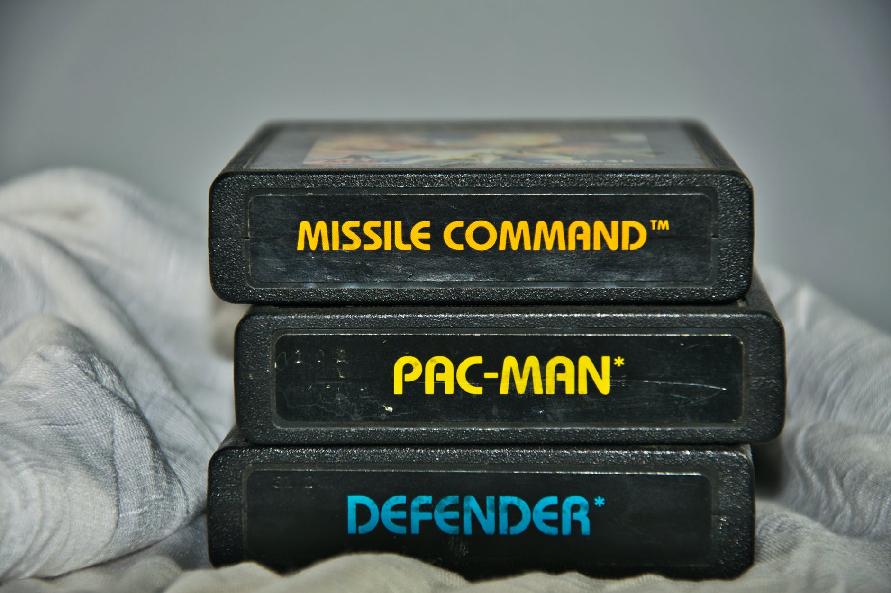

Produtos
Oferecemos os melhores produtos em larga escala



Corpo da minha página!
Os Vídeo Games, ou consoles, se tornaram populares apenas 12 anos após a criação do que viria a ser o primeiro console do mundo. No começo, em 1958, o primeiro jogo para computador foi criado em um laboratório militar nos EUA e se chamava Tênis para Dois, e até hoje é jogado. Desde então a evolução dos jogos não parou. Em 1971 é criado o primeiro Arcade do mundo, o Computer Space. Na necessidade de criar uma máquina especializada em rodar apenas alguns jogos o primeiro console, propriamente dito, foi criado por Nolan Bushnell, desde então o mundo nunca mais foi o mesmo. 30 anos depois, os consoles e seus jogos possuem tanta fama quanto antigamente, mas agora com gráficos chiques, inteligência quase artificial, interação com o jogador e um modo de jogar com várias pessoas ao mesmo tempo. Mas os jogos não servem somente para diversão, muitos criados se utilizam de técnicas para ensinar as crianças de um modo divertido, os consoles também ajudaram na inovação da tecnologia de inteligência artificial com a criação de máquinas cada vez mais inteligentes, um exemplo são as máquinas criadas para ganhar dos melhores jogadores de xadrez, elas conseguem prever milhares de movimentos em questão de segundos!. O Portal Games tem como objetivo não só proporcionar mais informação sobre os jogos de pura diversão mas também aqueles que ensinam.
Novo Paragráfo
Oferecemos os melhores serviços em Desenvolvimento de Sites
Oferecemos os melhores produtos em larga escala
Confira nossos parceiros

Nosso time organizado é composto pelos organizadores:
Para entrar em contato conosco pode usar o formulário e endereços abaixo: